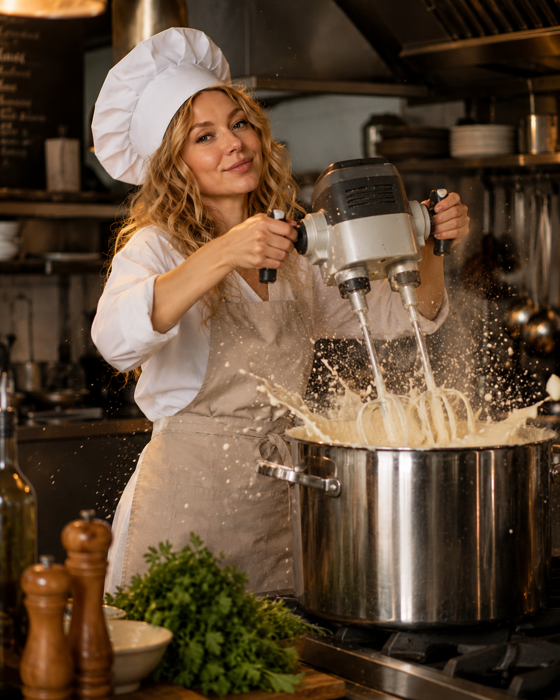

№1. Кофе 3-в-1 от Анжелы

Первый и самый знаменитый рецепт нашего кафе.
Проверен временем, Анжелой и строительным миксером.
Что понадобится:
- 1 ведро кофе
- 1 ведро сливок
- 1 ведро воды
- Большая кастрюля
- Строительный миксер
Как приготовить:
- Вылить ведро кофе в большую кастрюлю.
- Добавить ведро сливок.
- Добавить ведро воды.
- Взбить строительным миксером до фирменной пенки.
- Подать гостям и сделать вид, что так и было задумано.
Приятного кофепития!